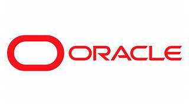
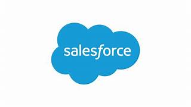

About Hyderabad
Hyderabad is one of India's fastest-growing Information Technology cities and is home to many multinational software companies, innovation centers, and research laboratories. The city is known for its excellent infrastructure, skilled workforce, and modern IT parks such as HITEC City and Financial District.
Many leading Product-Based and Service-Based companies have established their campuses in Hyderabad. Thousands of software engineers, developers, cloud architects, cybersecurity experts, and data scientists work here. Hyderabad continues to attract fresh graduates and experienced professionals because of its growing technology ecosystem and excellent career opportunities.
Top IT Companies in Hyderabad
1. Microsoft
Company Type : Product-Based Company
Microsoft's Hyderabad campus is one of its largest research and development centers outside the United States. It develops Windows, Azure Cloud, Microsoft 365, Artificial Intelligence, and enterprise software solutions.
Official Website :
www.microsoft.com
2. Google
Company Type : Product-Based Company
Google operates major engineering and cloud technology teams in Hyderabad. Employees work on Google Search, Maps, Cloud Platform, Android, Artificial Intelligence, and business solutions.
Official Website :
www.google.com
3. Deloitte
Company Type : Service-Based Company
Deloitte provides consulting, auditing, cloud computing, cybersecurity, analytics, and digital transformation services for businesses worldwide.
Official Website :
www.deloitte.com
4. Tech Mahindra
Company Type : Service-Based Company
Tech Mahindra delivers software development, digital transformation, networking, AI, cloud services, and enterprise IT solutions to global clients.
Official Website :
www.techmahindra.com
5. Infosys

Company Type : Service-Based Company
Infosys provides IT consulting, software engineering, artificial intelligence, cloud computing, automation, and digital services to customers around the world.
Official Website :
www.infosys.com
6. Tata Consultancy Services (TCS)

Company Type : Service-Based Company
TCS is India's largest IT services company offering consulting, enterprise software development, cloud solutions, AI, and business technology services.
Official Website :
www.tcs.com
7. Wipro
Company Type : Service-Based Company
Wipro delivers cloud services, cybersecurity, software development, consulting, business process services, and digital transformation solutions.
Official Website :
www.wipro.com
8. Accenture
Company Type : Service-Based Company
Accenture specializes in consulting, cloud computing, software engineering, AI, cybersecurity, and digital business transformation services.
Official Website :
www.accenture.com
9. Oracle

Company Type : Product-Based Company
Oracle develops enterprise databases, cloud platforms, ERP software, and business applications used by organizations around the globe.
Official Website :
www.oracle.com
10. Salesforce

Company Type : Product-Based Company
Salesforce develops Customer Relationship Management (CRM) software, cloud applications, AI-powered business solutions, and enterprise platforms used worldwide.
Official Website :
www.salesforce.com
Help
This webpage has been designed to help students, freshers, and job seekers understand Hyderabad's growing IT industry. Each company profile provides basic information, company type, and the official website for further exploration.
Use the navigation menu at the top of this page to move between different sections. You can also return to the Home page to explore Chennai and Bangalore IT companies and compare Product-Based and Service-Based organizations.
For the latest recruitment updates, internship opportunities, and company news, always refer to the official company websites.